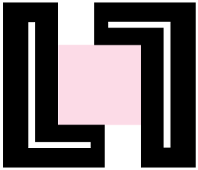

<dom-module id="ll-footer">
  <template>

    <style is="custom-style">
      :host {
        display: block;
        background-color: var(--ll-light-border);
        width: 100%;
      }

      .container{
        width: calc(100% - 10vw);
        height: 100%;
        display: table;
        padding: 7.5vh 5vw;
      }

      .logoimg{
        height: 10vh;
        width: calc(10vh * 1.16);
        position: relative;
      }

      .left{
        display: table-cell;
        vertical-align: middle;
        width: 20vw;
      }

      .right{
        padding-left: 5vw;
        display: table-cell;
        vertical-align: middle;
        font-family: IBMBold;
      }

      .lefttext{
        font-family: IBMLight;
        line-height: 2em;
        margin-top: 2vh;
      }

      paper-button.socialbutton{
        margin: 1vh 1vw !important;
        padding: 1vh 1vw !important;
        min-width: 0 !important;
        -webkit-transition: all 350ms ease;
        -moz-transition: all 350ms ease;
        -ms-transition: all 350ms ease;
        -o-transition: all 350ms ease;
        transition: all 350ms ease;
      }

      paper-button.socialbutton:hover{
        background: var(--ll-light-grey);
        -webkit-transition: all 350ms ease;
        -moz-transition: all 350ms ease;
        -ms-transition: all 350ms ease;
        -o-transition: all 350ms ease;
        transition: all 350ms ease;
      }
    </style>

    <div class="container">
      <div class="left">
        
        <div class="lefttext">
          New York, NY 10016 <br>
          Email: ablevy94@gmail.com <br>
        </div>
      </div>
      <div class="right">
        <div class="rightbuttons">
          Follow Us
        </div>
        <div class="rightbutton">
          <paper-button class="socialbutton">
            <social-media-icons icon="facebook" size="24"></social-media-icons>
          </paper-button>
          <paper-button class="socialbutton">
            <social-media-icons icon="instagram" size="24"></social-media-icons>
          </paper-button>
          <paper-button class="socialbutton">
            <social-media-icons icon="twitter" size="24"></social-media-icons>
          </paper-button>
          <paper-button class="socialbutton">
            <social-media-icons icon="linkedin" size="24"></social-media-icons>
          </paper-button>
          <paper-button class="socialbutton">
            <social-media-icons icon="pinterest" size="24"></social-media-icons>
          </paper-button>
        </div>
      </div>
    </div>

  </template>

  <script>
    class LlFooter extends Polymer.Element {
      
      static get is() { return 'll-footer'; }
      
      static get properties() {
        return {
          title: {
            type: String
          },

        };
      }

      ready(){    
        var self = this;  
        
        super.ready();

        this._addSubscribers();

      }

      connectedCallback(){
        super.connectedCallback();
        console.log(this.getAttribute("name") + " connected");
      }

      _addSubscribers(){
        var self = this;
        // $.subscribe("setLoadingText", function(event, data) {
        //     self.loadingText = data;
        // });

      }

      
     
    }


    window.customElements.define(LlFooter.is, LlFooter);
  </script>
</dom-module>
